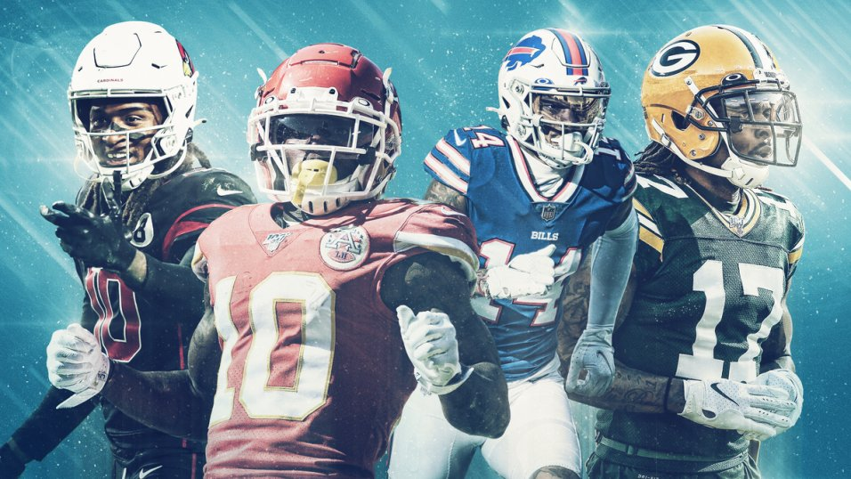

How to Not Mess Up Drafting Wide Receivers
In today’s passing league, the wide receiver position might be the most flashy on the entire team. Every year seems to be “one of the best wide receiver classes” in coming through the draft. With all this talent and…